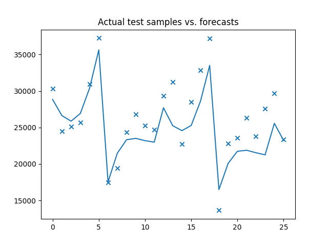

Simple auto_arima model¶
This is a simple example of how we can fit an ARIMA model in several lines without knowing anything about our data or optimal hyper parameters.

Out:
Fit ARIMA: order=(2, 1, 2) seasonal_order=(1, 0, 1, 12); AIC=2896.726, BIC=2920.757, Fit time=1.125 seconds
Fit ARIMA: order=(0, 1, 0) seasonal_order=(0, 0, 0, 12); AIC=3049.597, BIC=3055.604, Fit time=0.030 seconds
Fit ARIMA: order=(1, 1, 0) seasonal_order=(1, 0, 0, 12); AIC=2895.906, BIC=2907.922, Fit time=0.348 seconds
Fit ARIMA: order=(0, 1, 1) seasonal_order=(0, 0, 1, 12); AIC=2917.891, BIC=2929.907, Fit time=0.464 seconds
Fit ARIMA: order=(1, 1, 0) seasonal_order=(0, 0, 0, 12); AIC=3039.240, BIC=3048.252, Fit time=0.018 seconds
Fit ARIMA: order=(1, 1, 0) seasonal_order=(2, 0, 0, 12); AIC=2890.943, BIC=2905.963, Fit time=1.079 seconds
Fit ARIMA: order=(1, 1, 0) seasonal_order=(2, 0, 1, 12); AIC=2886.324, BIC=2904.348, Fit time=2.340 seconds
Fit ARIMA: order=(0, 1, 0) seasonal_order=(2, 0, 1, 12); AIC=2897.455, BIC=2912.475, Fit time=1.918 seconds
Fit ARIMA: order=(2, 1, 0) seasonal_order=(2, 0, 1, 12); AIC=2873.483, BIC=2894.510, Fit time=2.266 seconds
Fit ARIMA: order=(2, 1, 1) seasonal_order=(2, 0, 1, 12); AIC=2877.512, BIC=2901.543, Fit time=2.623 seconds
Fit ARIMA: order=(3, 1, 1) seasonal_order=(2, 0, 1, 12); AIC=2878.766, BIC=2905.801, Fit time=2.921 seconds
Fit ARIMA: order=(2, 1, 0) seasonal_order=(1, 0, 1, 12); AIC=2871.736, BIC=2889.759, Fit time=0.511 seconds
Fit ARIMA: order=(2, 1, 0) seasonal_order=(1, 0, 0, 12); AIC=2879.415, BIC=2894.434, Fit time=0.412 seconds
Fit ARIMA: order=(2, 1, 0) seasonal_order=(1, 0, 2, 12); AIC=2873.676, BIC=2894.703, Fit time=1.360 seconds
Fit ARIMA: order=(2, 1, 0) seasonal_order=(0, 0, 0, 12); AIC=3009.052, BIC=3021.068, Fit time=0.026 seconds
Fit ARIMA: order=(2, 1, 0) seasonal_order=(2, 0, 2, 12); AIC=2915.717, BIC=2939.748, Fit time=2.224 seconds
Fit ARIMA: order=(1, 1, 0) seasonal_order=(1, 0, 1, 12); AIC=2889.711, BIC=2904.731, Fit time=0.448 seconds
Fit ARIMA: order=(3, 1, 0) seasonal_order=(1, 0, 1, 12); AIC=2865.597, BIC=2886.624, Fit time=0.925 seconds
Fit ARIMA: order=(3, 1, 1) seasonal_order=(1, 0, 1, 12); AIC=2875.976, BIC=2900.007, Fit time=1.041 seconds
Fit ARIMA: order=(4, 1, 1) seasonal_order=(1, 0, 1, 12); AIC=2873.306, BIC=2900.341, Fit time=1.393 seconds
Fit ARIMA: order=(3, 1, 0) seasonal_order=(0, 0, 1, 12); AIC=2922.444, BIC=2940.468, Fit time=0.375 seconds
Fit ARIMA: order=(3, 1, 0) seasonal_order=(2, 0, 1, 12); AIC=2874.364, BIC=2898.395, Fit time=2.663 seconds
Fit ARIMA: order=(3, 1, 0) seasonal_order=(1, 0, 0, 12); AIC=2870.751, BIC=2888.775, Fit time=0.779 seconds
Fit ARIMA: order=(3, 1, 0) seasonal_order=(1, 0, 2, 12); AIC=2867.555, BIC=2891.587, Fit time=2.518 seconds
Fit ARIMA: order=(3, 1, 0) seasonal_order=(0, 0, 0, 12); AIC=2992.000, BIC=3007.020, Fit time=0.037 seconds
Fit ARIMA: order=(3, 1, 0) seasonal_order=(2, 0, 2, 12); AIC=2881.836, BIC=2908.872, Fit time=3.021 seconds
Fit ARIMA: order=(4, 1, 0) seasonal_order=(1, 0, 1, 12); AIC=2858.119, BIC=2882.151, Fit time=1.060 seconds
Fit ARIMA: order=(5, 1, 1) seasonal_order=(1, 0, 1, 12); AIC=2865.443, BIC=2895.482, Fit time=1.661 seconds
Fit ARIMA: order=(4, 1, 0) seasonal_order=(0, 0, 1, 12); AIC=2939.344, BIC=2960.372, Fit time=0.130 seconds
Fit ARIMA: order=(4, 1, 0) seasonal_order=(2, 0, 1, 12); AIC=2870.597, BIC=2897.632, Fit time=3.399 seconds
Fit ARIMA: order=(4, 1, 0) seasonal_order=(1, 0, 0, 12); AIC=2866.697, BIC=2887.724, Fit time=0.644 seconds
Fit ARIMA: order=(4, 1, 0) seasonal_order=(1, 0, 2, 12); AIC=2859.811, BIC=2886.846, Fit time=2.302 seconds
Fit ARIMA: order=(4, 1, 0) seasonal_order=(0, 0, 0, 12); AIC=2992.332, BIC=3010.356, Fit time=0.043 seconds
Fit ARIMA: order=(4, 1, 0) seasonal_order=(2, 0, 2, 12); AIC=2893.461, BIC=2923.501, Fit time=4.984 seconds
Fit ARIMA: order=(5, 1, 0) seasonal_order=(1, 0, 1, 12); AIC=2859.280, BIC=2886.316, Fit time=1.563 seconds
Total fit time: 48.654 seconds
print(__doc__)
# Author: Taylor Smith <taylor.smith@alkaline-ml.com>
import pyramid as pm
import numpy as np
from matplotlib import pyplot as plt
# #############################################################################
# Load the data and split it into separate pieces
data = pm.datasets.load_wineind()
train, test = data[:150], data[150:]
# Fit a simple auto_arima model
arima = pm.auto_arima(train, error_action='ignore', trace=1,
seasonal=True, m=12)
# #############################################################################
# Plot actual test vs. forecasts:
x = np.arange(test.shape[0])
plt.scatter(x, test, marker='x')
plt.plot(x, arima.predict(n_periods=test.shape[0]))
plt.title('Actual test samples vs. forecasts')
plt.show()
Total running time of the script: ( 0 minutes 48.677 seconds)